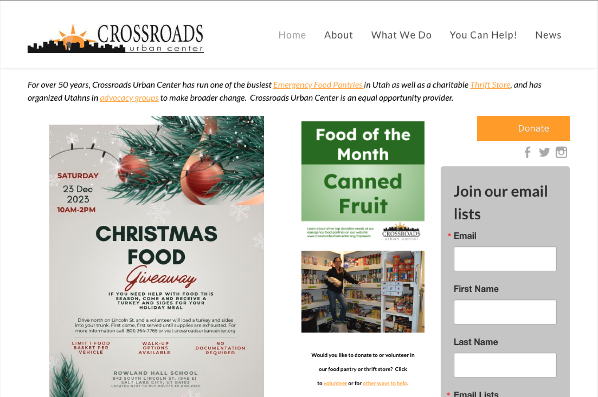
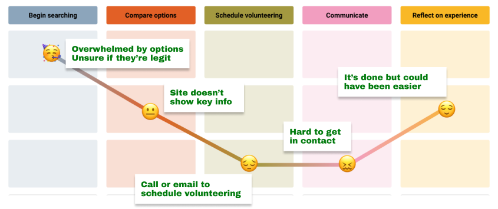
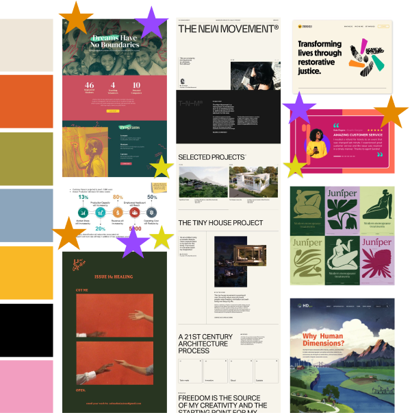
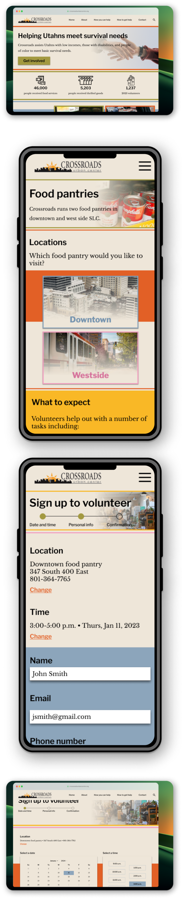

Crossroads Urban Center redesign
UX design and research, UI design

Overview
Crossroads Urban Center is a local nonprofit that helps Utahns meet basic survival needs. Our team believed that its outdated website was holding it back from building a broader, more engaged community.
Goals
- Bring more awareness to the organization
- Increase confidence among possible donors
- Allow more effective volunteer scheduling
Teams
- Myself, UX design and research, UI design
- Clair Nebeker, UX design and research, UI design
- Dominic Clayton, UX design and research

Methodology
Excerpts
Defining the user journey
Meet Holly. As a busy mom, she wants easy-to-plan volunteering options that work with her schedule. Holly needs to know which organizations to trust so she can make a difference in her community.

Based on data gathered through user research and market analysis, our team focused on updating or adding the following features:
UI inspiration
Our UI exploration drew us toward bold colors and well-defined page sections. Product cards and data visualization were top of mind.

Final designs
This redesign focused on users looking to volunteer with Crossroads. Future iterations should explore user personas for donations and users who want to use Crossroads’ services.


